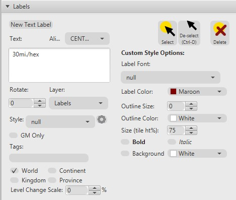
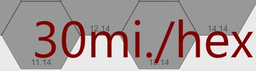
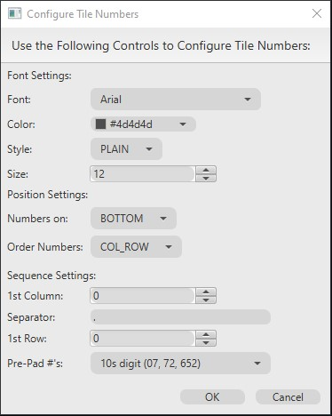
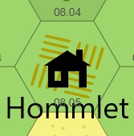
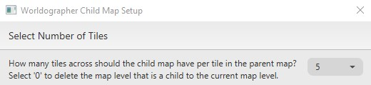

Old School Gamer Blog
Ramblings from old-school gamers
Hex Gen - The Surrounding Area
26 Jul 2025 - Cpt. Redbeard
Once you’ve got your concept and pitch figured out you’ll need to start creating your hex map, one settlement of significant size where your players start out (e.g. The Village of Hommlet), at least 2 other settlements, other major terrain feature, a mysterious site to explore (e.g. The Moathouse), a dungeon entrance, and a random encounter table for the area.
”[…] sitting down with a large piece of hex ruled paper and drawing a large scale map. A map with a scale of 1 hex = 1 mile will be about right for player operations such as exploring, camping, adventuring, and eventually building their strongholds. Even such small things as a witch’s hut and side entrances to the dungeon can be shown on the map. The central features of the map must be the major town and the dungeon entrance.” – E.G.G.
Set up Worldographer
Here’s the steps to setup Worldgrapher for a 15x15 hex map at the WORLD level:
- Open Worldographer
- Select File->New World/Kingdom Map
-
Settings:
- Hexes Wide: 15
- Hexes High: 15
- Initial View Level: WORLD
- Select All one terrain and set to: Blank

- Click Generate Map
- Add label at World Level with the text “30mi/hex” by selecting Label->New Text Label and clicking on the the map to place it. Make sure only World is checked else it’ll appear on every level, not just the World level.


-
Show hex numbers & reduce size:
- Check Numbers in bottom toolbar

- Click the cog icon to the right of Numbers to Configure Tile Numbers
- Make a lighter Color (e.g. #4d4d4d)
- Set Size to 12
- Set Pre-Pad to 10s digit
- Check Numbers in bottom toolbar

Select Center Atlas-level Hex Terrain
Note: Atlas-level = WORLD level in Worldographer
Here’s the steps to set the starting location on the World map (known as Atlas-level map in AD&D) for your One large settlement (define large however you like):
- Select Terrain->Farmland (aka plains in DMG) & click on starting hex, e.g. 08.05, where the campaign will begin

- Select Feature->Building Clanmoot icon (if you right-click on the icon or terrain you can add it to your favorites so easy to find again)
- Enter label, e.g. Village of Hommlet
-
Settings:
- Check Override color and set to appropriate color e.g. Black
- Check Override Default Scale and set to appropriate scale, e.g. 75
- Check Scale height independently and set to appropriate scale, e.g. 75
- Set Label Style to City or Village
- Make sure World, Continent, Kingdom and Province is checked so feature icon and label appears on every level of the map

- Click in starting hex to place feature icon & label for starting settlement, e.g. 08.05

Generate Surroundings Atlas-level Hex Terrain
Use APPENDIX B: RANDOM WILDERNESS TERRAIN table on page 173 of the DMG to generate terrain surrounding starting tile. For the Atlas-level that’s just 6 tiles.
The tool below allows you to select the starting tile terrain type, “Plains” in this caase, and then click the link in step 1 to randomly generating the terrain types for the 6 surrounding tiles.
Here’s the steps to generate terrain:
- Roll a d20 6 times, noting down the result for each roll. These are the 6 terrain types surrounding your starting hex.
- Define the terrain type for each roll using the table below by matching the result under your starting tile’s terrain column, i.e. Plains, with the terrain type, e.g. if you rolled a 12 it is Scrub
- Apply the generated terrains to surrounding hexes in Worldographer of starting hex, e.g. 08.06, starting at hex above, e.g. 08.04, and continuing clockwise for all 6 surrounding cells
- Depressions & Ponds: retains prior terrain type and apply special marking indicating it’s a depression or pond
- 1 in 10 chance for Hills to include Forests and Forests to include Hills: roll a d10 for each hill and each forest hex to see if they contain both then update hex to represent that (link in step 1 automatically does this for you)
Generate Terrain

Appendix B – Random Wilderness Terrain
| Plains | Scrub | Forest | Rough | Desert | Hills | Mountains | Marsh | |
|---|---|---|---|---|---|---|---|---|
| Plains | 1-11 | 1-3 | 1 | 1-2 | 1-3 | 1 | 1 | 1-2 |
| Scrub | 12 | 4-11 | 2-4 | 3-4 | 4-5 | 2-3 | 2 | 3-4 |
| Forest* | 13 | 12-13 | 12-14 | 5 | N/A | 4-5 | 3 | 5-6 |
| Rough | 14 | 14 | 15 | 6-8 | 6-8 | 6-7 | 4-5 | 7 |
| Desert | 15 | 15 | N/A | 9-10 | 9-14 | 8 | 6 | N/A |
| Hills** | 16 | 16 | 16 | 11-15 | 15 | 9-14 | 7-10 | 8 |
| Mountains*** | 17 | 17 | 17 | 16-17 | 16-17 | 15-16 | 11-18 | N/A |
| Marsh | 18 | 18 | 18 | 18 | 18 | 17 | N/A | 9-15 |
| Pond | 19 | 19 | 19 | 19 | 19 | 18-19 | 19 | 16-19 |
| Depression | 20 | 20 | 20 | 20 | 20 | 20 | 20 | 20 |
* 1 in 10 also includes hills
aka Hill Forest Decid., Hill Forest Evrgr. in Worldographer.
** 1 in 10 also includes forest
aka Hill Forest Decid., Hill Forest Evrgr. in Worldographer.
*** 1 in 20 have a pass which leads through the range
aka Shapes->Preset: Trail->Curve, reduce Width, e.g. 5 click
points through mountain to represent pass.
Appendix B – Terrain Guide
- Plain: tundra, steppe, savanna, prairie, heath, moor, downs, meadow e.g. Farmland in Worldographer
- Scrub: brush, veldt, bush, thickets, brackens e.g. Grassland in Worldographer
- Forest: woods, jungle, groves and copses (light forest) e.g. Forest Decid., Forest Evrgr., etc. in Worldographer
- Rough: badlands e.g. Other Badland in Worldographer
- Desert: barrens, waste, flat, snowfield e.g. Desert Sandy in Worldographer
- Hills: ridges, bluffs, dunes e.g. Hills in Worldographer
- Mountains: mesas, glacier, tors e.g. Mtn in Worldographer
- Marsh: fen, slough, swamp, bog, mire, quagmire, morass e.g. Marsh in Worldographer
- Pond: pools, tarn, lake e.g. Cosmic Planet High Water Medium Temperature with Override Default Scale and Scale height independently set appropriately for size and shape of pond/lake in Worldographer
- Depression: gorge, rift, valley, canyon e.g. Symbol Crater with Color override, Override Default Scale, Scale height independently and Rotate (clockwise) set appropriately for size, color and direction of gorge in Worldographer
Source: DMG p173 APPENDIX B: RANDOM WILDERNESS TERRAIN
Can continue to build out map at this level, if desired.
Select Sub-level Hex Terrain
Note: Sub-level = CONTINENT level in Worldographer.
Starting hex = Center hex of large hex, e.g. 40.24, and should have village/town icon and label from Atlas-level
Here’s the steps to drill into the central hex at the Atlas-level to start creating the map you can use to in the first few sessions for the players to start their hex crawl:
- In Worldographer, change Level to CONTINENT
- Select 5 for Number of Tiles then click OK, OK

- Remove overspill hexes by selecting the Blank terrain then clicking on unwanted hex or holding down left mouse button and moving over them (overspill is any not part of the 6 large hexes surrounding starting large hex)
- Add label at Continent Level with the text “6mi/hex”
Generate Sub-level Hex Terrain
This follows the same process as generatign terrain at the Atlas-level except it is for 31 hexes this time.
Here’s the steps to generate the terrain for the times surrounding your starting settlement:
- Roll a d20 31 times, noting down the result for each roll. These are the 31 terrain types surrounding your starting hex.
- Check first few hexes have some additional plains, e.g. low numbers, so it makes sence for a settlement like this and re-roll, if necessary, until terrain distribution feels right for what you have in mind for this area
- Define the terrain type for each roll using the table below by matching the result under your starting tile’s terrain column, i.e. Plains
- Apply the generated terrains to all the tiles representing the higher level Atlas tile radiating out from the starting hex, e.g. 40.25
- In Worldographer optionally blank out all hexes in center large hex except center starting hex to make it easier to see which hexes have had terrain from spreadsheet applied
- Optionally make the center hex Farmland if village with farms
- Apply randomly generated terrain to surrounding hexes until the terrain type starting at hex above starting hex. Proceed up until top of large hex reached, e.g. 40.42, 40.23, then proceed from hex to the right down to bottom of large hex, or until change in terrain type, e.g. 41.22, 41.23, 41.21, etc.
- Repeat until all hexes adjacent hexes to center starting hex are filled:
- When change in terrain reached set that hex to the new terrain type then start over at hex below or to the right of starting hex, e.g. 40.26, and proceed to bottom of large hex then proceed from hex to left up to top of large hex, or until change in terrain type
- When change in terrain reached set that hex to the new terrain type then start over hex at below or to the left starting hex
- Now apply adhoc to remaining hexes using generated terrain as guidance, e.g. pick an unfilled hex to start applying the rest of the terrain to
- Depressions & Ponds: retains prior terrain type and apply special marking indicating it’s a depression or pond
- 1 in 10 chance for Hills to include Forests and Forests to include Hills: roll a d10 for each hill and each forest hex to see if they contain both then update hex to represent that (link in step 1 automatically does this for you)